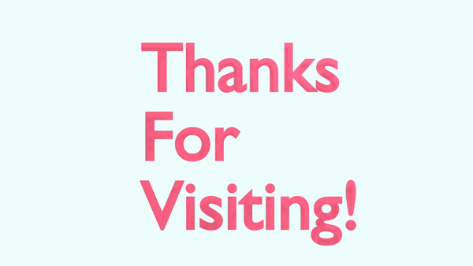

Hello! I am Apurva. I completed my graduation in Financial Markets from
University of Mumbai and shorty after that I was working as a Product
Executive in a brokerage firm named Sharekhan Ltd. I used to handle their
website. While working there I got introduced to User interface and User experience
and I found it interesting. When I was in college I was thinking about creating my own
blog, so I started researching about how I can create a website. While doing my
research I realised that there are so many things to web development and each
aspect of web development was very fascinating for me. Unfortunately, I couldn’t
find a niche for the blog at that time and I didn’t create my blog. But I wanted to
learn more about web development and UI/UX therefore I started searching what
programs are available for it. I came across the program of Interactive Media Management.
As I don’t have any prior education in the field of media, I am creating this portfolio so I can apply
for the course.I hope you like the website!
